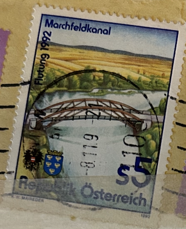
| SOURCE | TITLE| IMAGE MATCH | click to source page |
| www.ebay.com | Specimen, Austria Sc1580 Marchfeld Canal, Bridge | eBay | 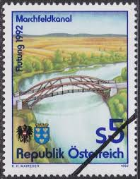 |
| www.ebay.com | Austria 1992 MARCHFELD CANAL SC 1580 MNH | eBay | 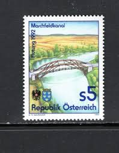 |
| www.dreamstime.com | Marchfeld Canal Stock Photos - Free & Royalty-Free Stock ... | 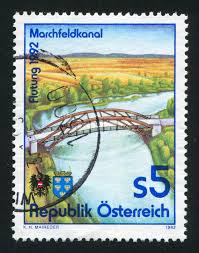 |
| www.ebay.com | Austria 1992 Canal Waterway Bridge Transport Commerce ... | 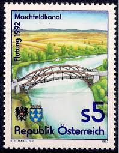 |
| www.stampexindia.com | Austria 1992-Bridge over Canal, 1 Value, Used, S.G. 2308 ... | 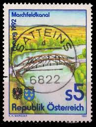 |
| marumatestore.com | オーストリア 1992年マルヒフェルト運河完成 - 趣味の切手専門店 ... | 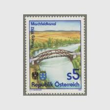 |
| www.lbdphilately.com | Products | 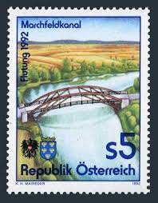 |
| www.ebay.com | Austria 2078,2079 (complete issue) used 1992 special stamps ... | 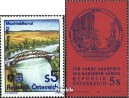 |
| www.briefmarken-versand-welt.de | 1992 Flutung des Marchfeldkanals - Briefmarken-Versand-Welt ... | 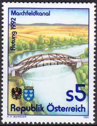 |
| www.mysticstamp.com | 131-32 - 1932 Australia - Mystic Stamp Company | 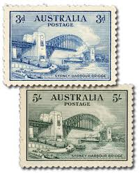 |
| www.mysticstamp.com | 5811 - 2023 25c Presort Bridges: Arrigoni Bridge- Middletown ... | 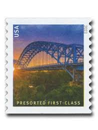 |
| www.buyhungarianstamps.com | 2179-2184 Czechoslovakia - Prague Bridges, PRAGA 1978 (MNH ... | 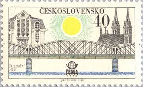 |
| www.stampcommunity.org | Bridges, Bridges, Bridges! On Stamps - Page 28 - Stamp ... | 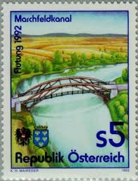 |
| www.europenowjournal.org | The Danube – EuropeNow | 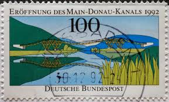 |
| www.alamy.com | Templin lake hi-res stock photography and images - Alamy | 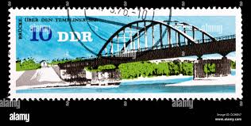 |
| www.bardostamps.com | Modern U.S. Stamps: Scott 5808-5811; 5811a, (25c) Bridges ... | 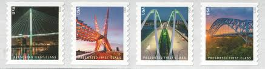 |
| www.hipstamp.com | Sweden #496 used | Europe - Sweden, General Issue Stamp ... | 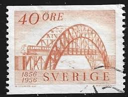 |
| commons.wikimedia.org | File:US stamp 1901 Pan Am 5c Bridge at Niagara Falls.jpg ... | 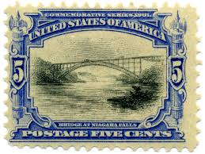 |
| www.pinterest.com | Ghana. ADOMI BRIDGE, VOLTA RIVER. Scott 293 A73, Issued 1967 ... | 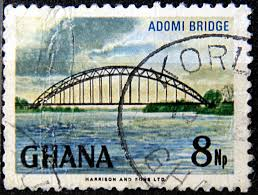 |
| www.123rf.com | BERMUDA - CIRCA 1989: A Stamp Printed By GREAT BRITAIN Shows ... | |
| cea.org | East Hampton Teacher's Photo Catches Eye of USPS ... | 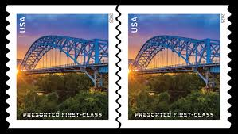 |
| www.facebook.com | Sri lanka stamp - Bridges & culverts of sri lanka Mint stamp ... | 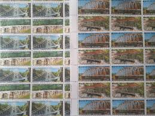 |
| www.bidcurios.com | Germany - Used Stamp - 1986 Frederick the Great - Former ... | 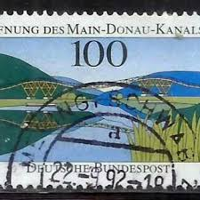 |
| en.wikipedia.org | Golden Hill Bridge - Wikipedia | 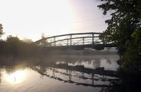 |
| www.nbcconnecticut.com | Middletown's Arrigoni Bridge to Be Featured on USPS Stamp ... | |
| www.shutterstock.com | 3,577 Stamp East Germany Royalty-Free Images, Stock Photos ... | 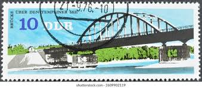 |
| deqistamps.com | Yugoslavia postage stamp year 1951 overprinted airmail – ZEFIZ | 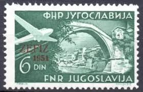 |
| tildecafe.medium.com | International Letter Writing Week | by Deepti Pradhan | Medium | 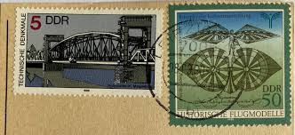 |
| www.dreamstime.com | Vienna Aqueduct Stock Photos - Free & Royalty-Free Stock ... | 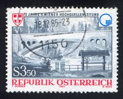 |
| postalmuseum.si.edu | Pan-American Exposition Issues | National Postal Museum | 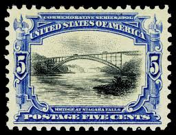 |
| austria-forum.org | Marchfeldkanal | 1992 | Briefmarken | Kunst und Kultur im ... | 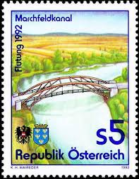 |
| thedigitalphilatelist.com | Rhodesia Philately: 1969 Bridges of Rhodesia – 2/6d ... | 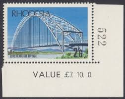 |
| www.mysticstamp.com | 5808-11 - 2023 25c Presort Bridges - Mystic Stamp Company | 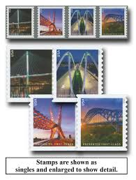 |
| www.buyhungarianstamps.com | Germany 1956 Europa – Eastern Europe Postage Stamps ... | 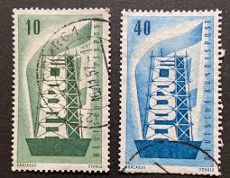 |
| www.tms.org | Postage Stamps: A Convergence of Metallurgy, Art, and History | 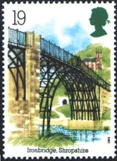 |
| www.stampsforever.com | Bridges — Stamps Forever | 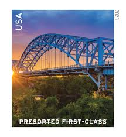 |
| www.usphila.com | Values of US Stamps Scott Catalogue #297 - 1901 5c Pan ... | 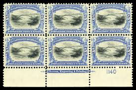 |
| allegro.pl | RFN - Nowy most na Dunaju - Mi. 1630 ** • Cena, Opinie ... | 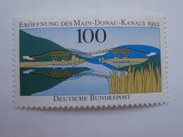 |
| www.frontierccu.org | Branch/ATM Services | Banking Services | Frontier | 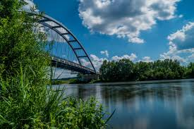 |
| postalmuseum.si.edu | Serbia | National Postal Museum | 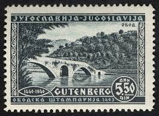 |
| www.kenmorestamp.com | 1901 Pan-American Exposition #294-299 - 1900-1909 #294-373 - USA | 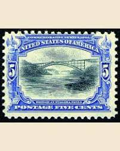 |
| www.alamy.com | Uk postal mark Cut Out Stock Images & Pictures - Alamy | 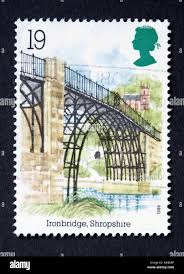 |
| blog.jimgrey.net | A long ago Wabash River crossing on US 50 in Indiana - Down ... | 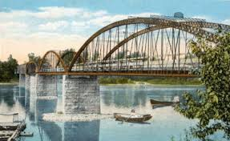 |
| commons.wikimedia.org | File:Выпуск по программе EUROPA. Дисна. Мост через р. Дисну ... | 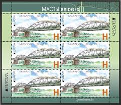 |
| www.osta.ee | Saksamaa " SILD " 1992 MNH (218707048) - Osta.ee | 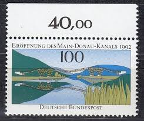 |
| alphabetilately.org | Trains on US Stamps | 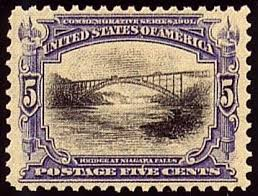 |
| www.youtube.com | Snoqualmie river flooding near Duvall, WA - YouTube | 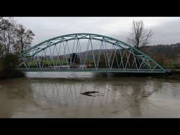 |
| structurae.net | Unbraced tied-arch bridges from around the world | Structurae | 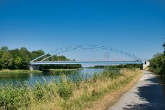 |
| www.facebook.com | Mike Perkins - Mike Perkins added a new photo. | 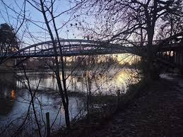 |
| oldthing.de | 1630 Main-Donau-Kanal ** Ecke u.l. | Briefmarken günstig | 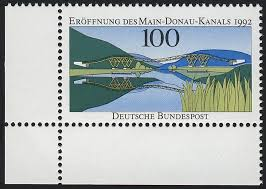 |
| en.wikipedia.org | Jerome Street Bridge - Wikipedia | 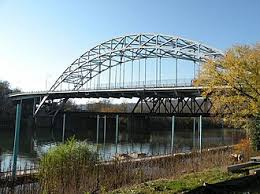 |
| www.ebay.com | Österreich Nr. 2078** Die Flutung des Marchfeldkanals | eBay | |
| historicbridges.org | Jersey Shore Bridge - HistoricBridges.org | |
| www.travelks.com | Motocoach and Tour Operator Services | |
| www.forwardedge.com | US Mint Stamps | |
| thestampforum.boards.net | Bridges on Stamps | The Stamp Forum (TSF) | |
| shopee.com.my | Worldwide Landmark used Stamp | Shopee Malaysia | |
| www.instagram.com | ThrowbackThursday 📸 Construction of the Kresge-Kerr Bridge ... | |
| www.trashpaddler.com | Trashpaddler: Champlain's Long Shadow | |
| muse.union.edu | Vischer's Ferry Nature and Historic Preserve – Kelly ... |
{kind=link}
{kind=link}